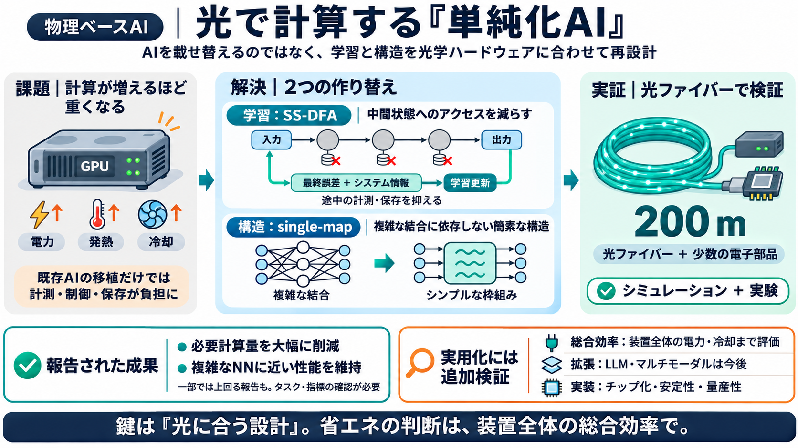

物理深層学習を高効率化する新たな学習法とアーキテクチャを開発 ～光ダイナミクスを活用した省資源でスケーラブルな深層学習を実証～ | テック・アイ技術情報研究所
物理深層学習を高効率化する新たな学習法とアーキテクチャを開発 ～光ダイナミクスを活用した省資源でスケーラブルな深層学習を実証～ 光のダイナミクスを利用した画像認識と学習の概念図 ＜関連情報＞ ### 状態スキップ学習とシ…

物理深層学習を高効率化する新たな学習法とアーキテクチャを開発 ～光ダイナミクスを活用した省資源でスケーラブルな深層学習を実証～ 光のダイナミクスを利用した画像認識と学習の概念図 ＜関連情報＞ ### 状態スキップ学習とシ…
Zeno Schätzle P. Bernát Szabó Alice Cuzzocrea Matěj Mezera Frank Noé doi:10.1038/s43588-026-01065-y Nature Computational…
# Zhang Headline: Glacier Capital China 庚辛资本中国 - Managing Partner Current role: Founding Managing Partner Seniority: Pa…
# Zhang [...] ## Education - Cangzhou University, High School, English ## Skills servo control, industrial pumps, fitti…
# Zhang Headline: Research Associate - Sourceman International Current role: Research Associate Seniority: Specialist,…